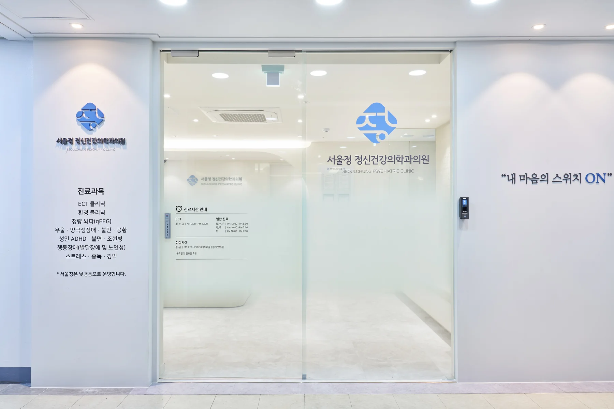
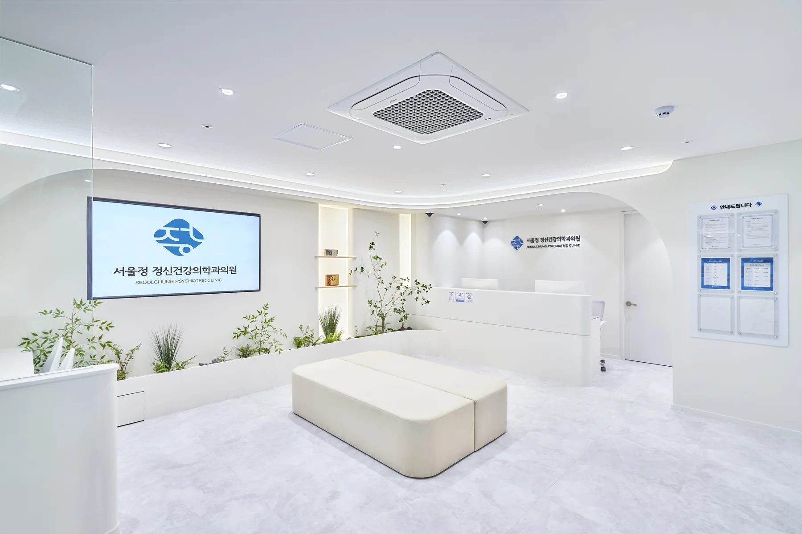
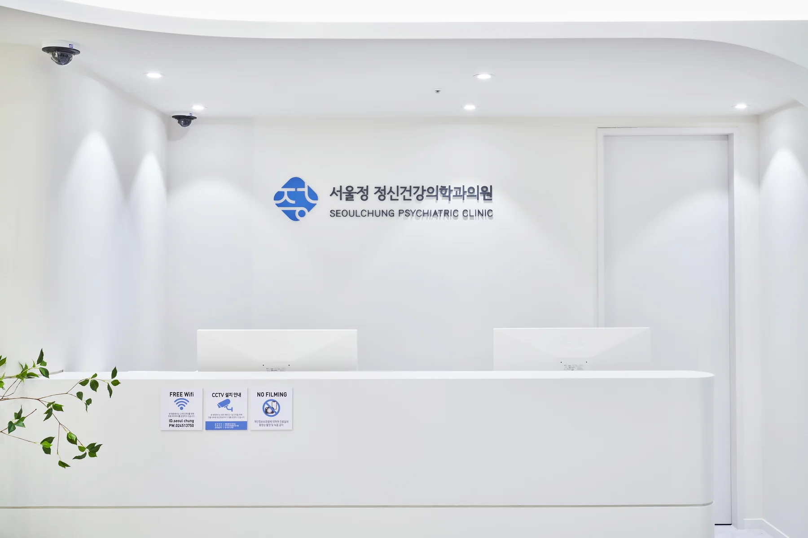
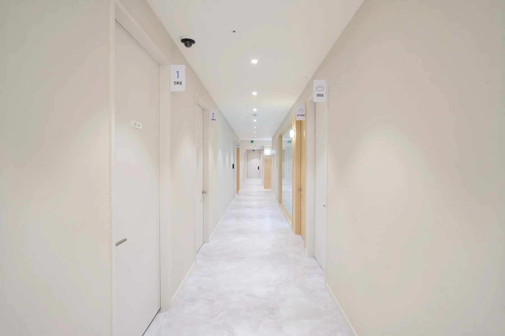
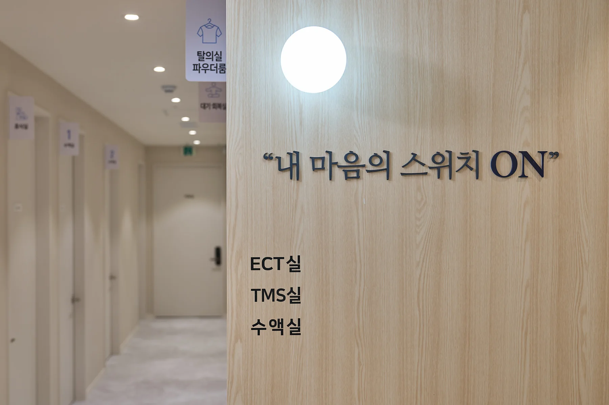

입지와 개원 조건
상업용 부동산, 사업 조건과 일정 검토
OPENING · BRAND · PMO
입지와 사업 조건부터 브랜드, 공간, 구매와 개원 행정까지 하나의 오픈 일정으로 연결합니다.
정신건강의학과의 전문성과 신뢰를 유지하면서 환자의 심리적 진입 장벽을 낮추는 브랜드·공간 경험을 만들었습니다.
공식 사이트 바로가기상업용 부동산, 사업 조건과 일정 검토
한글 ‘정’에서 출발한 엠블럼·컬러·언어
진료 정보와 의료진 신뢰를 낮은 장벽으로 전달
철거·냉난방·소방·전기·가스 과업 연계
실내외 사인·명함·서식·통합 제작물
가구·장비·EMR·개설 신고와 오픈보드
전문성과 신뢰를 나타내는 블루, 차분한 딥 네이비와 회복의 감각을 더하는 아쿠아를 로고·공간·사인·디지털 접점에 일관되게 적용했습니다.
“내 마음의 스위치 ON”
한글 ‘정’에서 출발한 엠블럼과 차분한 컬러 시스템으로 치료의 전문성, 안정감과 긍정적인 전환을 함께 표현했습니다.





로고 한 점에서 시작한 시각 언어가 홈페이지와 공간, 사인과 제작물까지 이어지도록 설계해 환자가 접하는 모든 장면의 신뢰도를 높였습니다.
가이드북과 랜딩, 정책 시뮬레이션, 병원별 분납 테이블을 연결해 복잡한 개원 구매와 자금 시점을 하나의 프로그램으로 구조화했습니다.
개원 과업과 필요 예산
거래 한도와 분납 시뮬레이션
인테리어·장비·브랜드 통합
공급사 대금과 품질 관리
월 분납과 반복 구매